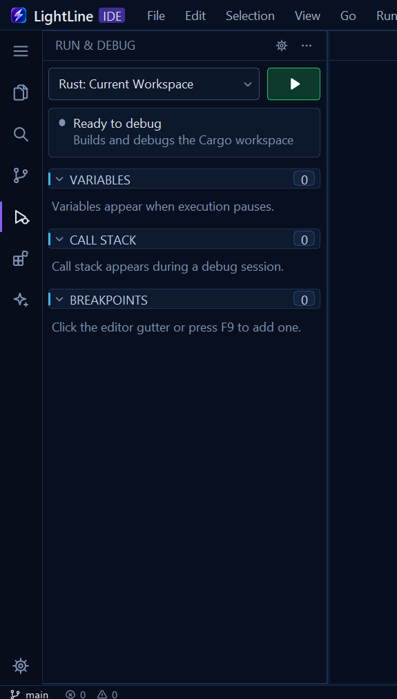

On the left is a screenshot of the panel today. On the right is the proposed panel, drawn at the same 125% scale in LightLine's own colours, in the same style as the new Source Control panel. It's the same debugger (LLDB for Rust, debugpy for Python), the same configurations, the same six controls and the same three sections. What changes is the layout: the controls sit where your eye already is, there's one line of status instead of a card, and the sections become plain lists you can click.
Hover rows and buttons in the mock.
TodayScreenshot, 125% display

ProposedSame scale, with three breakpoints set to show their rows; other states use the buttons above
What changes
One launch bar. The green ▶ is joined to the configuration picker as one 28 px control, like VS Code's, instead of a 36 px dropdown with a separate big button beside it. The picker still offers Automatic, Rust: Current Workspace and Python: Current File. In Automatic it says what it picked (Rust · Auto).
The toolbar takes its place while debugging. Continue or Pause, Step Over, Step Into, Step Out, then Restart and Stop, as 28 px icon buttons in the same row, with the configuration named at the right. Today they appear as a second row of bordered tiles and push everything down. Each has a tip with its key (F5, F10, F11, Shift+F11, Shift+F5). Steps are dimmed while the program runs.
Status is one line instead of a 58 px card: a coloured dot, what's happening, and where. Grey means ready, green running, amber paused (Paused · main.rs:42), red failed. A failed build gets a Show Output link.
Sections are flat, like Source Control: 22 px rows, a chevron, the title and a count pill. There's no bordered card or blue bar on each header. They sit in one list that scrolls, so a long call stack no longer stops at 5 frames.
Variables read as name: value, with the value in the editor's own colours: strings green, numbers orange, true/false/None blue, structs dimmed. Today values start at a fixed column 126 px from the edge and get cut off. Expand arrows are drawn icons, not text triangles.
The call stack marks where you're paused with the editor's execution arrow on an amber row, instead of a blue card. Clicking a frame opens its file at that line(new; today frames do nothing).
Breakpoints look like the gutter's: the same red dot, the file name, its folder dimmed, and the line number at the right. The fake ✓ box goes, because breakpoints can't be switched off without removing them. Click one to go to it; ✕ on hover removes it, and the header's hover button removes all of them (new).
The header's ··· is a real menu: Start Debugging, Select Configuration, Debug Console, Python: Install debugpy, Remove All Breakpoints. Today ··· opens the Command Palette and the ⚙ opens Settings, which don't belong to this panel.
The status bar turns amber while a session runs, as in VS Code, so you can tell you're debugging even when the panel is closed.
In sizes
Measure (logical pixels)
Today
Proposed
Configuration and start
36, two controls
28, one control
Debug controls during a session
a second 36 px row
replace the launch bar: 0 extra
Status
58, card
22, one line
Section header
28 with card and gaps
22
Variable, frame and breakpoint rows
23–24
22
First section starts at (from the panel's top)
about 174 when idle, 220 while debugging
about 106, idle or debugging
Call stack frames shown
at most 5
all of them; the list scrolls
Speed
Nothing new runs. The debugger, its messages and its threads are unchanged, and the panel draws only what debug_state already holds.
Fewer, cheaper shapes. The status card, six bordered tiles and three header cards go, along with their GDI Ellipse brushes. Dots, arrows and controls come from the shared icon atlas, like Source Control's. Value colours are the theme's existing syntax colours.
Hover redraws one row or one button (the same Hot targets as Source Control), with no timers. Idle stays at 0 wakeups.
Clicking a frame or breakpoint opens or switches a tab, as Go to Definition does. Nothing is read in advance.
Open questions
The amber status bar while debugging: keep it (as drawn), or leave the status bar alone?
Watch expressions (a WATCH section that re-evaluates expressions on each pause) would fit here, but they're new debugger work. They'd come later, not in this change; the Debug Console already evaluates an expression on demand.